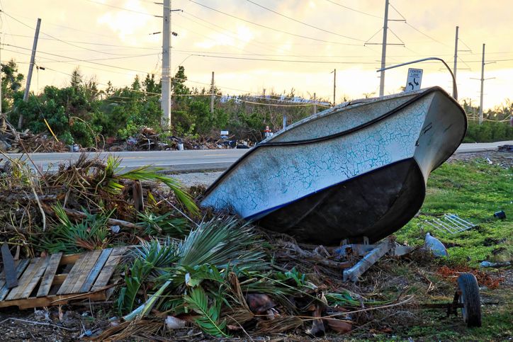

Medio Ambiente
MEDIO AMBIENTE
PROBLEMAS
Los problemas del medio ambiente sobre los pulmones del planeta: los bosques desaparecen por la deforestación
La sequía y la escasez de agua: los problemas medioambientales en el mundo afectan a los recursos naturales
Consumo abusivo: tus residuos agravan los problemas medioambientales globales
Los problemas del medio ambiente también dañan tu salud: contaminación del aire que respiras
Uno de los problemas del medio ambiente más graves: el cambio climático
Contaminación del mar: los problemas del medio ambiente y tu alimentación
